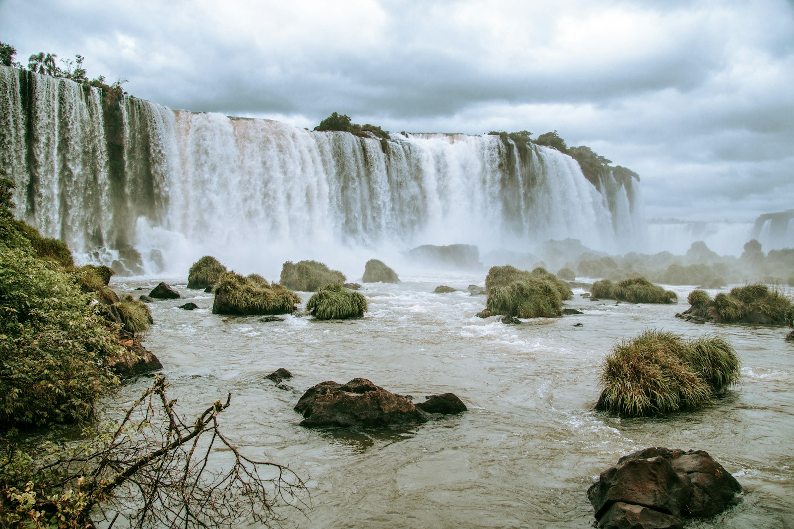
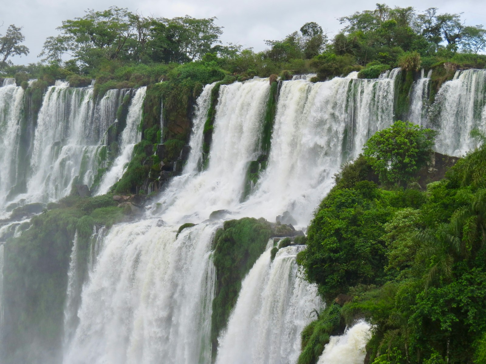
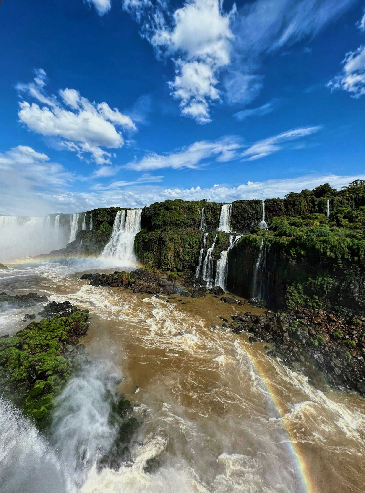
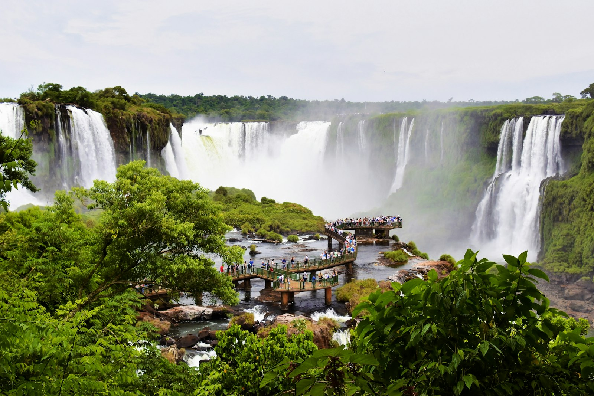

CATARATAS E NATUREZA
Foz do Iguaçu
A força das Cataratas do Iguaçu e diferentes formas de explorar a região em uma viagem feita para você.
Conhecer esta experiência →
A EXPERIÊNCIA
As Cataratas de perto, no seu ritmo.
Foz do Iguaçu combina paisagens marcantes com passeios para diferentes perfis. O roteiro pode ser organizado em torno das Cataratas e de outros atrativos da cidade.
Atividades sugeridas
Visita ao Parque Nacional do Iguaçu e à Trilha das Cataratas, passeio no Parque das Aves e visita panorâmica à Itaipu são opções que podem compor a viagem.
O que pode estar incluído
- Planejamento dos passeios e deslocamentos
- Hospedagem e transporte conforme a proposta
- Ingressos e acompanhamento quando contratados
- Suporte da Rud Viagens antes da viagem
O que não está incluído
- Serviços não indicados na proposta contratada
- Despesas pessoais
Datas, duração, valores e serviços são definidos na proposta. A disponibilidade dos atrativos e as regras de visitação devem ser confirmadas antes da reserva.
Como funciona
Conte seu período, perfil, preferências e orçamento pelo WhatsApp. A Rud Viagens organiza uma proposta com roteiro, serviços e condições. O planejamento está incluído na contratação.
Quando acontece
As datas e a duração são combinadas conforme sua disponibilidade e a operação dos atrativos. Os passeios apresentados são sugestões para o planejamento.
Informações importantes
Antes da reserva, confirme ingressos, deslocamentos e inclusões da proposta. Atividades e condições de visitação podem variar.
Quer viver Foz do Iguaçu?
Falar com a Rud Viagens no WhatsApp →FOTOS DO DESTINO
Foz do Iguaçu em imagens


